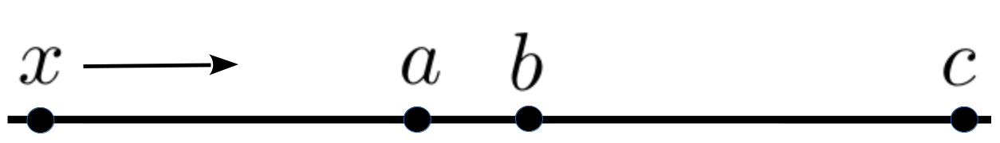
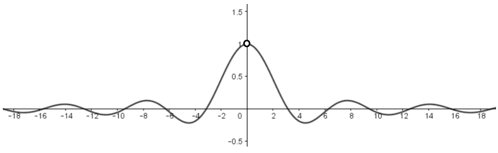
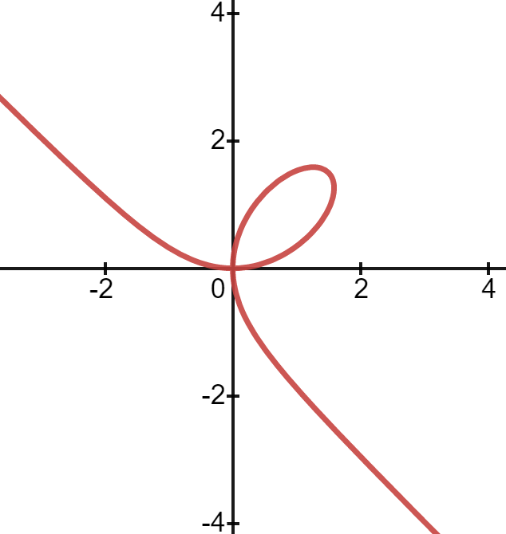

Section12.1Horizontal Asymptotes as Limits “at Infinity”
\TLogo{PSP:lhopitals-rule}
In our fishery model in the previous chapter we referred to the carrying capacity of the lake, \(P=100\text{,}\) as an “asymptote.” Loosely speaking, an asymptote is a line that the graph of a function “gets close to.” Any line can be an asymptote but we will be primarily interested in horizontal asymptotes (lines like the graph of \(y=5\)) and vertical asymptotes (lines like the graph of \(x=5\)).
Take another look at the graph of the Witch of Agnesi at the right. You can readily see that, as \(x\) moves to the right \(y\) gets “closer and closer” to zero. This is the essential idea but the phrase “closer and closer” is too vague for our purpose.
Here’s why. In the sketch below, \(x\) is moving to the right. As you can see \(x\) gets “closer and closer” to \(a\text{.}\) But it also gets “closer and closer” to both \(b\) and \(c\text{.}\)

While \(x\) is getting “closer and closer” to all three of \(a\text{,}\)\(b\text{,}\) and \(c\) it is only getting “arbitrarily close” to \(a\text{,}\) and “arbitrarily close” is what we usually mean when we say “closer and closer.” When \(x\) is getting “arbitrarily close\aside{The phrase “arbitrarily close” will be adequate for our present purposes but eventually even that will not be sufficiently precise. The need for precise language is real and very delicate. We will return to this matter [cross-reference to target(s) "SECLimitLaws" missing or not unique]. For now be aware that we are not quite done perfecting the meaning of arbitrarily close.” }’’ to \(a\) we say that \(x\) approaches and we write \(x\rightarrow a\text{.}\)
It is clear that the graph of the Witch comes arbitrarily close to the line \(y=0\) so we write \(y\rightarrow0\) as \(x\rightarrow\infty\text{.}\) This is spoken aloud as “\(y\) approaches zero as \(x\) approaches infinity.”
Subsection12.1.1Limit Notation
Of course, the notion of “approaching infinity” is troublesome as well. That we speak in this fashion has more to do with the construction of the English language than with the mathematics being represented. Since \(y\) is proceeding toward zero (an actual number) it makes sense to say “\(y\) approaches zero.” The notation “\(y\rightarrow0\)” captures this idea nicely. And since we usually pronounce the symbol \(\infty\) as “infinity” it feels natural to write \(x\rightarrow\infty\) and to speak this aloud as “\(x\) approaches infinity” as if \(\infty\) is a place we could get to. But as we’ve observed, this is absurd. Properly speaking the symbols “\(x\rightarrow\infty\)” should be spoken aloud as “\(x\) increases without bound,” but nearly everyone says “\(x\) approaches infinity” instead because it is a less cumbersome phrase. Like so much of mathematics this is perfectly clear once the underlying ideas have been internalized, but in the beginning it is can be quite confusing. Be patient with this.
An alternative, and more common notation is: \(\tlimit{x}{\infty}{\frac{1}{1+x^2}}=0\) which we read aloud as “The limit as \(x\) approaches infinity of one over one plus \(x\) squared is equal to zero” but this also collides with the construction of the English language. From the discussion above we know that \(x\rightarrow\infty\)" indicates that \(x\) increases without bound, but when we write \(\tlimit{x}{\infty}{\frac{1}{1+x^2}}=0\) what exactly does “\(=0\)” mean? What is equal to zero? Certainly the Witch is never equal to zero since its graph never crosses (or even touches) the \(x\) axis.
The expression \(\tlimit{x}{\infty}{\frac{1}{1+x^2}}=0\) is making a very specific statement, one that is difficult to capture in a natural language like English. It says that the expression \(\frac{1}{1+x^2}\) is approaching a particular value (zero) as \(x\) approaches \(\infty\text{.}\) The equals sign doesn’t indicate that the function, \(\frac{1}{1+x^2}\) actually equals that value. Instead it is the limit of \(\frac{1}{1+x^2}\) which is equal to zero. Whether the function itself is ever equal to the limit, or not, is irrelevant. We’re interested in what it gets arbitrarily close to.
We are treading at the edge of some very deep waters here so we will not attempt to address all of the nuances yet. Instead we will simply interpret the formula \(\tlimit{x}{\infty}{\frac{1}{1+x^2}}=0\) to mean that as \(x\) approaches infinity (\(x\rightarrow\infty\)) the expression \(\frac{1}{1+x^2}\) approaches zero \(\left(\frac{1}{1+x^2}\rightarrow0\right)\text{.}\)
In Chapter 17 we will replace “arbitrarily close” with something much more precise. Indeed, finding a better way to say “arbitrarily close” will be the culmination of our efforts. This is what will allow us to finally replace differentials with a solid theoretical foundation.
But for now, we have enough to give our first definition of the limit concept.
Definition12.2.An Intuitive Definition of a Limit at \boldmath\(\pm\infty\).
\begin{enumerate} \item If, as \(x\rightarrow\infty\text{,}\)\(f(x)\) gets arbitrarily close to some number \(A\text{,}\) we write \centerline{\(\limit{x}{\infty}{f(x)}=A. \)} \item If, as \(x\rightarrow-\infty\text{,}\)\(f(x)\) gets arbitrarily close to some number \(A\text{,}\) we write \centerline{\(\limit{x}{-\infty}{f(x)}=A. \)} \end{enumerate}
Example12.3.
As we’ve observed, for very large positive values of \(x\text{,}\) the function \(W(x)=\frac{1}{1+x^2}\) will be close to zero (the larger the \(x\) value, the closer \(\frac{1}{1+x^2}\) is to zero). Likewise, for very large, negative values of \(x\text{,}\)\(W(x)\) will also get close to zero so:
We used the Witch for our first example because we are quite familiar with its properties from our earlier investigations. However we needn’t have started with so complex a function.
Drill12.4.
Use the graph of \(f(x)=\frac1x\) to argue that \(\tlimit{x}{\infty}{\frac1x}=0\) and \(\tlimit{x}{-\infty}{\frac1x}=0\text{.}\)
The limit concept is deeply abstract. We are introducing it here because, (1) the limit idea gives us a handy way to define asymptotes, and (2) when we return to in in Chapter 17 it will be helpful if you are comfortable with the notation and the essential underlying idea.
We have the following definition.
Definition12.5.Horizontal Asymptotes.
\begin{enumerate}[label={ (\alph*)}] \item If \(\limit{x}{\infty}{f(x)}=A\) then the graph of the function \(f(x)\) has the horizontal asymptote, \(y=A.\) \item If \(\limit{x}{-\infty}{f(x)}=B\) then the graph of the function \(f(x)\) has the horizontal asymptote, \(y=B.\) \end{enumerate} as in the next three theorems.
In [cross-reference to target(s) "DEFHorizontalAsymptotes" missing or not unique] it will frequently be true that \(A\) and \(B\) are the same number. In that case we express both limits in the more compact form: \(\limit{x}{\pm\infty}{f(x)}=A
\text{.}\)
Problem12.6.
(a)
Justify the following assertion as clearly and as carefully as you can: \(\tlimit{x}{\infty}{5}=5
\text{.}\)
(b)
Generalize the statement in part (a).
From Problem~\ 12.6 we know \(\tlimit{x}{\infty}{5}=5\) and from Drill 12.4 we know that \(\limitatinf{x}{\frac1x}=0.\) Does it follow that
Yes, of course it does. In fact the following theorem is true.
Theorem12.7.The Limit of a Sum.
If \(\limit{x}{\pm\infty}{f(x)}=L\) and \(\limit{x}{\pm\infty}{g(x)}=M,\) then\vskip1mm \centerline{\(\limit{x}{\pm\infty}{\left[f(x)+g(x)\right]}=L+M
=\limit{x}{\pm\infty}{f(x)}+\limit{x}{\pm\infty}{g(x)}.\)}
This can be expressed in words with the phrase, “The limit of a sum is the sum of the limits.”
The following two theorems are not quite as intuitive as Theorem 12.7, but they are also true.
Theorem12.8.The Limit of a Product.
If \(\limit{x}{\pm\infty} {f(x)}=L\) and \(\limit{x}{\pm\infty}{g(x)}=M\) then\vskip1mm \centerline{\(\limit{x}{\pm\infty} {\left(f(x)\cdot g(x)\right)}=\left(\limit{x}{\pm\infty}{f(x)}\right)\cdot\left(\limit{x}{\pm\infty}{g(x)}\right)
= L\cdot M.\)}
This can be expressed in words with the phrase “The limit of a product is the product of the limits.”
Theorem12.9.The Limit of a Quotient.
If \(\limit{x}{\pm\infty} {f(x)}=L\) and \(\limit{x}{\pm\infty}{g(x)}=M\neq0\) then
This can be expressed in words with the phrase “The limit of a quotient is the quotient of the limits.”
Example12.10.
Notice that in ~ 12.9 we specifically required that \(\limit{x}{\infty}{g(x)}=M\neq0\text{.}\) This is necessary because, as we stated quite emphatically in [cross-reference to target(s) "DIGRESSIONdigression:DivideByZero" missing or not unique], division by zero is an undefined concept. Thus if \(\limit{x}{\infty} {f(x)}\) is equal to, say \(1\text{,}\) and \(\limit{x}{\infty}{g(x)}=0\) then
\begin{equation*}
\frac{\tlimit{x}{\infty}{f(x)}}{\tlimit{x}{\infty}{g(x)}}
\text{ appears
to be equal to }
\frac{1}{0}.
\end{equation*}
But this is meaningless, so we say that \(\limit{x}{\infty} {\frac{f(x)}{g(x)}}\) does not exist, or equivalently that it is undefined.
Like the differentiation rules, when these limit theorems are used together they allow us to break a large problem into smaller, more tractable, pieces. Here are some examples.
Example12.11.
We’d like to find the horizontal asymptotes of \(y=\frac{2}{x}-\frac{3}{x^2}\) if any exist. In this example we will write down all of the details of our computation. As you get more comfortable, you will probably abbreviate the process by doing much of this in your head. That’s good, but also be sure you can fill in all of the details when needed. You will need to be able to do this when the problems get more complex. From Definition 12.5 we see that if horizontal asymptotes exist they will be the lines \(y=\limit{x}{\infty}{\left(\frac{2}{x}-\frac{3}{x^2}\right)}\) and \(y=\limit{x}{-\infty}{\left(\frac{2}{x}-\frac{3}{x^2}\right)}\) so we need to evaluate these limits. For the first limit we see from ~ 12.7 that
So the horizontal asymptote will be \(y=0.\) \begin{ProficiencyDrill-1line} Evaluate \(\tlimit{x}{-\infty}{\left(\frac{2}{x}-\frac{3}{x^2}\right)}\text{.}\) Justify each step by citing the appropriate theorem or fact. \end{ProficiencyDrill-1line}
Example12.12.
To find one horizontal asymptote of \(y=\frac{x-1}{x}\) we evaluate:
Of course, not every curve has a horizontal asymptote so not every function has a limit as \(x\) approaches \(\pm\infty\text{.}\) For example, consider the curves \(y=x^2\) and \(y=x^3.\) % Clearly these curves have no horizontal asymptotes because as\aside{Note that we have used the plus-or-minus (\(\pm\)) symbol to combine two limits into a single expression.} \(x\rightarrow\pm\infty\) they don’t get close to a real number. In fact they either continue to rise or continue to drop as \(x\rightarrow\pm\infty\text{.}\)
But once again we need to keep in mind that the symbol “\(\infty\)” does not represent a number so saying that something is “equal” to \(\infty\) is meaningless\aside{Unless we define its meaning ourselves. How would you define the phrase “\(x\) equals infinity?”}. What we mean when we write
is that “as \(x\) increases without bound \(x\) squared increases without bound.”
Drill12.15.
Similarly \(\limit{x}{-\infty}{x^3}=-\infty\) means that as \(x\rightarrow-\infty\)\(x^3\rightarrow-\infty\text{.}\) How would we say this in words?
It is especially important to keep in mind that \(\infty\) is not a number when evaluating a limit like: \(\limit{x}{\infty}{(x^3-21x^2)}.\)
It is very tempting to attack this problem by noticing that each term is increasing without bound and write \(\infty-\infty=0,\) but in fact this limit is not zero. Can you see what the limit is? Give it some thought and take your best guess. We’ll come back to it shortly.
It is very clear that the limit: \(\limit{x}{\infty}{(x-x)}\) is zero. After all, \(x-x\) is constantly equal to zero so we have \(\limit{x}{\infty}{(x-x)} = \limit{x}{\infty}{0} = 0\text{.}\) So it seems to be clear that \(\limit{x}{\infty}{(x-x)} = \infty-\infty = 0\text{.}\) Anything minus itself has to be zero doesn’t it? Even grandmother - grandmother must be zero, right?
But now consider this limit: \(\limit{x}{\infty}{[(x+7)-(x-5)]}\text{.}\) Both \((x+7)\rightarrow\infty\) and \((x-5)\rightarrow\infty\) so \(\limit{x}{\infty}{\left[(x+7)-(x-5)\right]}\) also has the form \(\infty-\infty\) doesn’t it? But \((x+7)-(x-5)\) is constantly equal to \(12\) so, we have
Thus it appears that \(\infty-\infty\) can be zero, and that \(\infty-\infty\) can be \(12\text{.}\) But \(0\neq12\) so that can’t be! Moreover there is nothing special about \(12\text{.}\) We could have chosen any number to make our point. So we conclude that \(\infty-\infty\) is meaningless. Equivalently, we say it is undefined.
The source of the difficulty here is that only numbers can be subtracted\aside{Your teacher will tell you, if you ask, that we aren’t being entirely honest here. Mathematicians routinely add, subtract, multiply, and divide lots of things that you probably would not recognize as numbers. But grandmothers, and infinities are not among them.}. But neither \(\infty\) nor grandmother is a number so the expressions \(\infty-\infty\) and grandmother - grandmother are utter nonsense.
Drill12.16.
Find two functions, \(f(x)\) and \(g(x)\) such that as \(x\rightarrow\infty\) both \(f(x)\rightarrow\infty\) and \(g(x)\rightarrow\infty\) but \(\limit{x}{\infty}{\left[f(x)-g(x)\right]}\) is equal to each of the following.
(a)
\(10\)
(b)
\(-21\)
(c)
\(83,744\)
(d)
\(\pi\)
(e)
\(\sqrt{2}\)
(f)
Any real number
Limits can be deceptive so be careful. It can be helpful to have built in notational cues to remind ourselves that these are subtle problems. When we are working with limits we will use the notation \(\approach{\infty}\) to remind ourselves that \(\infty\) is not a number\aside{This is not a standard notation so you probably won’t see it anywhere except in this textbook.}.
Returning to the limit \(\limit{x}{\infty}{(x^3-21x^2)} \) and using this notational cue we have
This says that this limit consists of something which is approaching \(\infty\) (increasing without bound) minus something else which is approaching \(\infty\) (again, increasing without bound). When we say it like this -- more importantly when we think about it like this -- we can see that the value of the limit will depend upon precisely how the two parts increase without bound.
We now know that this limit is not necessarily equal to zero, but how can we discover what it actually is equal to? As in much of Calculus we need to re-express our formulas algebraically to see what is going on.
Rewriting \(x^3-21x^2\) as \(x^3\left(1-\frac{21}{x}\right)\) we have \begin{align*} \limit{x}{\infty}{(x^3-21x^2)} \amp=\limit{x}{\infty}{\left(x^3(1-21/x)\right)} \amp=\limit{x}{\infty}{x^3\cdot\left(1-\CancelToRed{0}{21/x}\right)} \amp=\approach{\infty}\cdot\approach{1}. \end{align*} This says that we have an expression which is increasing without bound multiplied by an expression which approaches the number one. Obviously the product will also increase without bound so we write \(\limit{x}{\infty}{(x^3-21x^2)}=\infty.\)
Similarly\aside{This is not the same limit. Look closely.} evaluating \(\limit{x}{-\infty}{(x^3+21x^2)}\) gives \begin{align*} \limit{x}{-\infty}{(x^3+21x^2)} \amp= \limit{x}{-\infty}{\left(x^3(1+21/x)\right)} \amp=\left[\limit{x}{-\infty}{x^3\cdot\left(1+\CancelToRed{0}{21/x}\right)}\right] \amp=\approach{-\infty}\cdot\approach{1} \amp=-\infty. \end{align*} This makes sense intuitively. We would expect that for large values of \(x\) (either positive or negative), \(x^3\) will continually outgrow (“approach infinity” faster than) \(21x^2\text{.}\)
We have established that, because \(\infty\) is not a number, the expression \(\infty-\infty\) does not make sense. What about \(\frac{\infty}{\infty}\text{?}\) Is it true that \(\frac{\infty}{\infty}=1\text{?}\)
No, of course not. The expression \(\frac{\infty}{\infty}\) is meaningless for the same reason that \(\infty\) - \(\infty\) is meaningless.
Consider \(\limit{x}{\infty}{\frac{x^4+x^2}{5x^4-100x}}\text{.}\) It is tempting to write \(\frac{\infty}{\infty}=1\text{,}\) but as we have observed, \(\infty\) is not a number so this makes no more sense than \(\infty-\infty=0\text{.}\) Once again, the key is to re-express the function algebraically. Factoring out the highest power of the variable from both the numerator and the denominator\aside{You may well ask, “How did we know to do that?” The answer is very unsatisfying. We were taught this technique by our teachers, just as you are being taught now. We’d have been hard pressed to come up with it on our own.} we see that \begin{align*} \limit{x}{\infty}{\frac{x^4+x^2}{5x^4-100x}} =\limit{x}{\infty}{\frac{x^4(1+1/x^2)}{x^4(5-100/x^3)}} \amp=\limit{x}{\infty}{\left[\CancelToRed{=1}{\frac{x^4}{x^4}}\cdot\frac{1+\CancelToRed{0}{1/x^2}}{5-\CancelToRed{0}{100/x^3}}\right]} \amp= 1\cdot\approach{\frac15} \amp=\frac15. \end{align*}
Example12.18.(Continued from ~ 10.1 ).
Recall that we did not complete ~ 10.4 because we did not previously have any way to determine what happens to the graph of \(y(x)=\frac{2+2x^2+2x^4}{1+x^4}\) as \(x\rightarrow\infty\) or as \(x\rightarrow-\infty\text{.}\) We do now. Finding what happens to the graph of \(y(x)=\frac{2+2x^2+2x^4}{1+x^4}\) as \(x\rightarrow\infty\) or as \(x\rightarrow-\infty\) is equivalent to evaluating the following limits:
\begin{equation*}
\limit{x}{\infty}{\frac{2+2x^2+2x^4}{1+x^4}}\ \ \text{ and }
\limit{x}{-\infty}{\frac{2+2x^2+2x^4}{1+x^4.}}
\end{equation*}
We will evaluate the first one and leave the second as a drill. Proceeding as in Example 12.17 we see that \begin{align*} \limit{x}{\infty}{\frac{2+2x^2+2x^4}{1+x^4}} \amp = \limit{x}{\infty}{\frac{x^4(2/x^4+2/x^2+2)}{x^4(1/x^4+1)}} \amp =\limit{x}{\infty}{\CancelToRed{1}{\frac{x^4}{x^4}}\cdot\frac{\CancelToRed {2/x^4}+\CancelToRed{0}{2/x^2}+2}{\CancelToRed{0}{1/x^4}+1}} \amp =2. \end{align*} \begin{ProficiencyDrill-1line} Show that \(\tlimit{x}{-\infty}{\frac{2+2x^2+2x^4}{1+x^4}}\) is also equal to two. \end{ProficiencyDrill-1line} We can now see that \(y(x)=\frac{2+2x^2+2x^4}{1+x^4}\) has a \term{horizontal asymptote} at \(y=2\text{.}\) If you haven’t already done so consider graphing this function to confirm.
Drill12.19.
Show that each of the following statements is true.
Do you think the function \(y(x) = \sqrt{x^2+2}-\sqrt{x^2+x}\) has any horizontal asymptotes? Take your best guess before we begin this example. To find any horizontal asymptotes we have to evaluate the limits \(\limit{x}{\pm\infty}{\left(\sqrt{x^2+2}-\sqrt{x^2+x}\right)}.\) First we’ll find the limit as \(x\rightarrow\infty\) and leave the limit as \(x\rightarrow-\infty\) as a drill for you. As always the trick is to rearrange this expression inside the limit algebraically -- without changing its value -- until we can see clearly what happens as \(x\rightarrow\infty\text{.}\) The square roots seem to be the difficulty here. So we’d like to find a way to make them go away. The standard trick for this is to multiply by the conjugate\aside{We are using the identity \((A-B)(A+B)=A^2-B^2\) to square both terms and get rid of the square roots. The factors \(A+B\) and \(A-B\) are mutually conjugate.} of \(\sqrt{x^2+2}-\sqrt{x^2+x}\text{,}\) namely \(\sqrt{x^2+2}+\sqrt{x^2+x}\text{.}\) Of course, if we do that then we need to divide by the conjugate as well. That way we’ve multiplied by \(1\) and have not changed the value of the expression. This won’t actually eliminate the square roots as we will still have them in the denominator. But let’s see what happens. \begin{align*} \limit{x}{\infty}{\left(\sqrt{x^2+2}-\sqrt{x^2+x}\right)} \amp = \limit{x}{\infty}{\left(\sqrt{x^2+2}-\sqrt{x^2+x}\right)}\textcolor{red}{\underbrace{\left(\frac{\sqrt{x^2+2}+\sqrt{x^2+x}}{\sqrt{x^2+2}+\sqrt{x^2+x}}\right)}_{=1}} \amp = \limit{x}{\infty}{\left(\frac{(x^2+2)- (x^2+x)}{\sqrt{x^2+2}+\sqrt{x^2+x}}\right)} = \limit{x}{\infty}{\left(\frac{2-x}{\sqrt{x^2+2}+\sqrt{x^2+x}}\right)}. \end{align*} Factoring the highest power of \(x\) out of the numerator and denominator gives \begin{align*} \limit{x}{\infty}{\left(\sqrt{x^2+2}-\sqrt{x^2+x}\right)} \amp =\limit{x}{\infty}{\frac{\textcolor{red}{x}\left(2/x-1\right)}{\textcolor{red}{\sqrt{x^2}}\left(\sqrt{1+2/x^2}+\sqrt{1+1/x}\right)}} \intertext{and since \(\sqrt{x^2}=\abs{x}\) we have} \amp =\limit{x}{\infty}{\frac{\textcolor{red}{x}\left(2/x-1\right)}{\textcolor{red}{\abs{x}}\left(\sqrt{1+2/x^2}+\sqrt{1+1/x}\right)}}. \intertext{But we’re evaluating a limit as \(x\rightarrow\infty\text{.}\) So, we’re really only interested in large, positive values of \(x\text{.}\) In this case \(\abs{x}=x\) so } \amp =\limit{x}{\infty}{\CancelToRed{=1}{\frac{x}{x}}\ \cdot\ \left[\frac{\CancelToRed{0}{2/x}-1}{\sqrt{1+\CancelToRed{0}{2/x^2}}+\sqrt{1+\CancelToRed{0}{1/x}}}\right]} \amp = -\frac12. \end{align*} Did you guess right? If you did, either you have a very strong intuition for these kinds of problems or you just had a moment of blind luck. So don’t just pat yourself on the back and walk away. Be sure to take a moment to figure out whether it was intuition or luck. You don’t want to confuse them. If you guessed wrong, or (most likely) were unable to come up with a guess don’t fret about it. You’re normal. But be sure you review and understand the steps to this solution so you can begin to build some intuition about such problems. This problem looked pretty intimidating, but once we got going in the right direction, it was all Algebra from there. Notice how the absolute value came into play. In this problem it wasn’t an issue since we were considering only positive values of \(x\text{.}\) But consider what would happen if \(x\) was negative, if \(x\rightarrow-\infty\text{.}\) In this case\aside{This is important. If you don’t see why \(\abs{x}=-x\) when \(x\lt0\) ask your teacher about it.}, \(\abs{x}=-x.\) \begin{Digression}[\boldmath \(\sqrt{x^2}=\abs{x}\)] \label{digression:AbsValSqrt} It is not true that \(\sqrt{x^2}=x\text{,}\) although this is an easy mistake to make. It is not true because the square root function, \(\sqrt{x}\text{,}\) is the functional inverse of the function
\begin{equation*}
f(x)=x^2, \text{ with domain } x\ge0.
\end{equation*}
Note that the domain restriction means that \(\sqrt{x}\) always returns a positive number. Thus \(\sqrt{2^2} = 2\text{,}\) but \(\sqrt{(-2)^2} = 2\text{,}\) also. Similarly,
\begin{equation*}
\sqrt{3^2}=\sqrt{(-3)^2}=3,\
\sqrt{10^2}=\sqrt{(-10)^2}=10, \text{ and in general }
\sqrt{x^2}=\abs{x}.
\end{equation*}
When \(x\) is negative \(\sqrt{x^2}=-x\) because when \(x\) negative \(-x\) is positive. \end{Digression} \begin{ProficiencyDrill} Try to guess the value of \(\limit{x}{-\infty}{ \left( \sqrt{x^2+2}-\sqrt{x^2+x} \right)} \) and then evaluate the limit to see if you guessed correctly. \end{ProficiencyDrill}
It is clear from the graph at the right that \(\limit{x}{\infty}{\sin(x)}\) does not exist since the \(\sin(x)\) has no horizontal asymptotes. To say that this limit does not exist means that \(y=\sin(x)\) is not approaching any particular value as \(x\rightarrow\infty\text{.}\) It’s not even “approaching” \(+\infty\) or \(-\infty\) since it is bounded both above and below.
Now how about this limit: \(\tlimit{x}{\infty}{\frac{\sin(x)}{x}}\text{?}\) Since \(\limit{x}{\infty}{\sin(x)}\) does not exist we can’t apply Theorem 12.9. Neither is it of the form \(\frac{\approach{\infty}}{\approach{\infty}},\) so none of the techniques we’ve used before will help us.
We need a new idea.
Look at the graph of \(f(x) = \frac{\sin(x)}{x}\) below.

Can you see that the horizontal asymptote is \(y=0\text{?}\)
It certainly looks like \(y=0\) is an asymptote in both directions which seems to suggest that[1mm] \centerline{\(\tlimit{x}{\infty}{\frac{\sin(x)}{x}} =
\tlimit{x}{-\infty}{\frac{\sin(x)}{x}} = 0. \)}[1mm] This is correct, but is there a way to see this algebraically? After all, this graph could just as easily support the conclusion that \(y=0.00000001\) (or \(y=\) any other number which is extremely close to zero) is the asymptote. We don’t want to draw conclusions from a picture, but it is difficult to see what we can do, isn’t it?
We will analyze what happens when \(x\rightarrow\infty\) and leave the case \(x\rightarrow-\infty\) as a drill for you.
Let’s “disassemble” our function in order to understand it better. The function \(f(x)=\frac{\sin(x)}{x}\) clearly comes in two parts: \(\sin(x)\) and \(\frac{1}{x}\text{.}\) Because \(-1\le\sin(x)\le1\) we know that \(-\frac{1}{x}\le\frac{\sin(x)}{x}\le\frac1x\text{.}\) If we graph \(y=\frac{\sin(x)}{x}\text{,}\)\(y=\frac1x\text{,}\) and \(y=-\frac1x\) together as in the sketch at the right we see that for positive values of \(x\) the graph of \(y=\frac{\sin(x)}{x}\) is always caught between the graph of \(y=\frac1x\) and \(y=-\frac1x\text{.}\)
We know that both \(\pm\frac1x\rightarrow0\) as \(x\rightarrow\infty\text{.}\) Since \(\frac{\sin(x)}{x}\) is caught between \(\frac1x\) and \(-\frac1x\) it follows that, for positive values of \(x\text{,}\) the highest points on the graph of \(\frac{\sin(x)}{x}\) must also approach zero as \(x \rightarrow\infty\text{.}\) Therefore \(\tlimit{x}{\infty}{\frac{\sin(x)}{x}}=0\text{.}\)
Drill12.24.
Show that for negative values of \(x\text{,}\)\(-\frac1x \le
\frac{\sin(x)}{x} \le \frac1x\) also, so that \(\tlimit{x}{-\infty}{\frac{\sin(x)}{x}=0}\) as well.
This idea is often called the Squeeze Theorem or the Sandwich Theorem.
Theorem12.25.\boldmath The Squeeze Theorem, (when \(x\rightarrow\pm\infty\)).
There are two cases: \begin{enumerate} \item If \(\alpha(x)\le f(x)\le \beta(x)\) on some interval, \((c, \infty)\) and
\begin{equation*}
\limit{x}{\infty}{\alpha(x)} =
\limit{x}{\infty}{\beta(x)} = L
\end{equation*}
then \(\limit{x}{\infty}{f(x)} = L\) also. \item If \(\alpha(x)\le f(x)\le \beta(x)\) on some interval, \((-\infty,c)\) and
\begin{equation*}
\limit{x}{\infty}{\alpha(x)} =
\limit{x}{-\infty}{\beta(x)} = L
\end{equation*}
then \(\limit{x}{\infty}{f(x)} = L\) also. \end{enumerate}
In the previous example, notice that we had \(\frac{-1}{x}\le \frac{\sin(x)}{x}\le\frac1x\) for all \(x\neq0\text{,}\) but this is more than is actually required. We only need for the inequality to be satisfied when \(x\) sufficiently large, in either the positive or negative direction. That’s why we only require that \(\alpha(x)\le f(x)\le \beta(x)\) on the interval \((c,\infty)\) (positive case) or \((-\infty,c)\) (negative case) rather than for all values of \(x\text{.}\)
Problem12.26.
Use the Squeeze Theorem to determine each of the following limits:
(a)
\(\limit{x}{\infty}{\frac{x\cos(x)}{x^2+1}}\)
(b)
\(\limit{x}{-\infty}{\frac{x\cos(x)}{x^2+1}}\)
(c)
\(\limit{x}{\infty}{\frac{\lfloor x\rfloor}{x^2}},\) where \(\lfloor x\rfloor\) represents the greatest integer\aside{This is called the “greatest integer” function in mathematics, and the “floor” function in computer science. It rounds down to the greatest integer. For example \(\lfloor5.7\rfloor =5, \lfloor2\rfloor=2,
\lfloor\pi\rfloor=3\text{,}\) etc.} less than or equal to \(x\text{.}\)
Back in [cross-reference to target(s) "SECleonh-euler-harm" missing or not unique] you showed that \(y(t)=e^{-\frac{t}{2}}\left[\cos\left(\frac{\sqrt{3}}{2}t\right)+\sin\left(\frac{\sqrt{3}}{2}t\right)\right]\) satisfies the differential equation of damped oscillation (oscillation with resistance):
It should be clear from the sketch at the right that in addition to the horizontal asymptote \(y=0\text{,}\) the graph of \(y=\frac1x\) also has a vertical asymptote of \(x=0\text{.}\)
We can extend the ideas and the notation we’ve developed for horizontal asymptotes to handle vertical asymptotes as well. First note that since the expression \(\frac1x\) is not defined for \(x=0\) we can’t talk about the behavior of the function at zero. But we can talk about its behavior near zero. But the graph is very different depending on whether \(x\lt0\) or \(x\gt0\text{.}\) We will focus first on positive values of \(x\) .
For \(x\) near zero, and positive, it is very clear what is happening. As \(x\rightarrow0\) the function continues to increase without bound. We capture this notationally\aside{This notation is not universal. The standard notation is \(\limit{x}{0^+}{\frac1x}\text{.}\)} with
The limit in [cross-reference to target(s) "EQRightHandLimit" missing or not unique]) is called a right-hand limit and is read aloud as “the limit as \(x\) approaches zero from the right, of one over \(x\) equals infinity.”
The expression \(x\rightarrow0\) means that \(x\) is approaching the number zero. The qualification \(x\gt0\) specifies that it is approaching from the right. So writing \(\limitX{x}{0}{\frac1x}{x\gt0}=\infty\) means that as \(x\rightarrow0\) from the right, the function \(\frac1x\) increases without bound\aside{This should probably be written as \(\limitX{x}{0}{\frac1x}{x\gt0}\rightarrow \infty\) but sadly, it has become standard to say, and to write, that this limit “equals infinity,” which is absurd.}.
If we restrict \(x\) to negative values then we see that\aside{Note that the sense of the inequality has changed from [cross-reference to target(s) "EQRightHandLimit" missing or not unique]). It is now “less than.”}
The limit in [cross-reference to target(s) "EQLeftHandLimit" missing or not unique]) is called a left-hand limit and is read aloud as “the limit as \(x\) approaches zero from the left, of one over \(x\) equals negative infinity.” Right- and left-hand limits are generically called one-sided limits. One-sided limits are important theoretical tools but their theoretical value is not important to us right now. We will discuss them in more depth in [cross-reference to target(s) "SECone-sided-deriv" missing or not unique].
A function \(f(x)\text{,}\) will have a vertical asymptote as \(x\rightarrow a\) if either of the one-sided limits is \(\infty\) or \(-\infty\) (\(f(x)\) is increasing or decreasing without bound). We formalize this statement in the following definition.
Definition12.29.Vertical Asymptotes.
If
\begin{equation*}
\rlimit{x}{a}{f(x)}=\pm\infty \text{ or
}\llimit{x}{a}{f(x)}=\pm\infty
\end{equation*}
then the line \(x=a\) is a vertical asymptote of the graph of \(y=f(x)\text{.}\)
Drill12.30.
Compute each of the following limits. Read the notation carefully.
(a)
\(\rtlimit{x}{3}{\frac{1}{(x-1)(x-3)}}\)
(b)
\(\rtlimit{x}{1}{\frac{1}{(x-1)(x-3)}}\)
(c)
\(\rtlimit{x}{\frac{\pi}{2}}{\tan(x)}\)
Problem12.31.
Find all vertical asymptotes of the graphs of each of the following functions.
(a)
\(f(x)= \frac{1}{x^2-1}\)
(b)
\(f(x)= \frac{1}{(x^2-1)^2}\)
(c)
\(f(x)= \frac{x-1}{x^2-4}\)
(d)
\(f(x)= \frac{x-7}{x^2-5}\)
(e)
\(f(x)= \tan(x)\)
(f)
\(f(x)= \sec(x)\)
Section12.4Indeterminate Forms and L’H\^o pital’s Rule
Based on our experience so far it is tempting to conclude that we can locate vertical asymptotes by simply setting the denominator equal to zero and solving. But this is a naive conclusion as we will see next.
Example12.32.4.
Consider \(y=\frac{x-2}{x^2-4}\text{.}\) Setting the denominator equal to zero yields \(x=-2\) and \(x=2\text{,}\) but only one of these is a vertical asymptote. Do you see which one?
Let’s take a careful look at this example. By [cross-reference to target(s) "DEFVerticalAsymptotes" missing or not unique] we will have a vertical asymptote when either one-sided limit of a function increases or decreases without bound, so we must evaluate each one-sided limit.
We were careful to use one-sided limits to find the vertical asymptote at \(x= -2\) because this is what Definition 12.29 calls for. Strictly speaking we only needed one of them, but since these limits were not equal we evaluated them both.
However, for \(x=2\text{,}\) both one-sided limits are the same so we have
Observe that this limit has the form \(\limit{x}{2}{\frac{x-2}{x^2-4}}=\frac{\approach{0}}{\approach{0}}\text{.}\) A limit of this form is called an \term{Indeterminate Form}\aside{There are other kinds of Indeterminate Forms. We will encounter them later in this chapter.}.
Problem12.33.
Find all vertical asymptotes of the graphs of each of the following functions.
(a)
\(f(x)= \frac{x+2}{x^2-4}\)
(b)
\(f(x)= \frac{x-2}{x^2-4}\)
(c)
\(f(x)= \frac{x-2}{x^2-5x+6}\)
(d)
\(f(x)= \frac{x-3}{x^2-5x+6}\)
(e)
\(f(x)= \frac{x}{x^3-1}\)
(f)
\(f(x)= \frac{x^2-x}{x^4-1}\)
This example demonstrates that there is a difference between a function which does not exist at a point and a function with a vertical asymptote at a point. Notice that \(g(x)=\frac{x-2}{x^2-4}\) is undefined at both \(x=2\) and \(x=-2\text{,}\) but it only has an asymptote at \(x=-2\text{.}\)
It also displays something subtle about limits. One would be tempted to say that
and this is true when \(x\neq2\text{.}\) However, if we graph the two functions, \(g(x)=\frac{x-2}{x^2-4}\) and \(f(x)=\frac{1}{x+2}\) we see that there is a small difference between them\aside{This discussion is also a cautionary tale about the use of graphing technology. These two graphs will appear to be identical if you use technology to graph them.}: \vskip2mm \centerline{\includegraphics*[height=2.4in,width=5.4in]{../Figures/lhopital2}} \vskip2mm Do you see the difference? The value of \(g(2)\) is not defined because \(g(2)=\frac{2-2}{4-4}\) and we get a zero denominator. But no such difficulty occurs with \(f\) because \(f(2) = \frac{1}{2+2}=\frac14\text{.}\)
So, when \(x\neq2\text{,}\)\(g(x)\) and \(f(x)\) are the exactly the same. But they disagree when \(x=2\text{.}\) More precisely \(x=2\) is not in the domain of \(g(x)\) but it is in the domain of \(f(x)\text{.}\) Since the domains differ they must be different functions and it is incorrect to write \(\frac{x-2}{x^2-4}=\frac{1}{x+2}\) even though it is true for all but one value of \(x\text{.}\)
Problem12.34.
Suppose \(a\neq0\) is a real number.
(a)
Find all vertical asymptotes of \(f(x)=\frac{x-a}{x^2-a^2}\text{.}\)
(b)
Does your solution of part (a) still work when \(a=0\text{?}\)
Problem12.35.
Recall that in Problem 5.62 in Section 5.6 looked at the Folium of Descartes from Newton’s dynamic point of view.

In that problem you showed that the fluents, \(x(t) =
\frac{3t}{1+t^3}\) and \(y(t)=\frac{3t^2}{1+t^3}\) satisfy the equation of the Folium:
\begin{equation*}
x^3+y^3=3xy
\end{equation*}
and that \(t=0\) is the only value of \(t\) where \(\left(x(t), y(t)
\right)=(0,0)\text{.}\) How then, can it be that the Folium crosses itself at the origin?
(a)
In Problem 5.62 you determined that \(y\ge0\) when \(t\gt-1\text{.}\) Determine the values of \(t\) for which \(x\ge0\) and the which \(x\lt0\text{.}\)
(b)
Show that \(\limit{t}{\pm\infty}{x(t)}=\limit{t}{\pm\infty}{y(t)}=0.\)
(c)
Compute \(\dfdx{y}{x} = \frac{\dot{y}}{\dot{x}}\) in terms of \(t\) and compute \(\limit{t}{\pm\infty}{\frac{\dot{y}}{\dot{x}}}\text{.}\) Is this consistent with what you see on the graph?
(d)
Show that for \(t\neq0\text{,}\)\(t=\frac{y}{x}\) so that geometrically, \(t\) represents the slope of the line joining the origin to the point \((x,y)\) on the graph of the Folium. Is this consistent with what you obtained in part a? Explain.
(e)
Compute each of the following:
\(\displaystyle \rtlimit{t}{-1}{x(t)}\)
\(\displaystyle \ltlimit{t}{-1}{x(t)}\)
\(\displaystyle \rtlimit{t}{-1}{y(t)}\)
\(\displaystyle \ltlimit{t}{-1}{y(t)}\)
\(\displaystyle \rtlimit{t}{-1}{\dfdx{y}{x}}\)
\(\displaystyle \ltlimit{t}{-1}{\dfdx{y}{x}}\)
Is this consistent with the graph and the fact that \(t\) represents the slope from the origin to the point \((x,y)\text{?}\) Explain.
Subsection12.4.1L’H\^{o}pital’s Rule
We found earlier that \(\tlimit{x}{\infty}{\frac{\sin(x)}{x}}=0\text{,}\) so the function \(y=\frac{\sin(x)}{x}\) has a horizontal asymptote at \(y=0\text{.}\)
Does the graph of \(y=\frac{\sin(x)}{x}\) have a vertical asymptote at \(x=0\text{?}\) To answer this question we need to evaluate the limit \(\tlimit{x}{0}{\frac{\sin(x)}{x}}\text{.}\) But how can we do that?
If we try the obvious ploy of just “plugging in” zero for \(x\) we get the indeterminate form \(\frac{(\rightarrow0)}{(\rightarrow0)}\text{,}\) and we know we need to proceed cautiously with an indeterminate form.
From the graph of \(\frac{\sin(x) }{x}\) in the sketch at the right it would appear that \(\frac{\sin(x)}{x}\rightarrow1\) as \(x\rightarrow0\text{.}\) This is correct, but we’ve learned to be wary of relying on graphs. It would be best to evaluate the limit by another technique if possible.
Can we apply some algebraic trick?
It is hard to see what it would be. There isn’t much algebra we can do here. If there were other trigonometric functions involved we might be able to employ some trigonometric identity in the numerator, but there just isn’t much we can do with \(\sin(x)\text{.}\) This problem poses a bit more of a challenge than the indeterminate forms we have dealt with so far. We need a new idea.
Since the \(\sin(x)\) isn’t helping maybe we can replace it with something simpler. Seriously. Give some thought to what might be a valid replacement before reading on\aside{Remember that we’re really only interested in values of \(x\) that are very close (infinitely close?) to zero.}.
The Principle of Local Linearity says that the graph of a function and its tangent line are locally indistinguishable. We’re only interested in values of \(x\) near zero -- locally around zero -- so let’s try replacing \(\sin(x)\) with its tangent line.
Drill12.37.
Show that the line tangent to \(y=\sin(x)\) at \(x=0\) is \(y=x\text{.}\)
Replacing \(\sin(x)\) with \(x\text{,}\) we have\aside{We’ve placed the question mark over the equals sign because we don’t (yet) actually know that this is a valid approach. We’re just trying out ideas at the moment.}
which is consistent with what we see in the graph above. Our idea is showing some promise.
Example12.38.
Let’s try it again with \(\tlimit{x}{2}{\frac{x^3-8}{x^2-4}}\) which also has the indeterminate form \(\frac{\approach{0}}{\approach{0}}\text{.}\)
Drill12.39.
(a)
Show that the equation of the line tangent to \(f(x)=x^3-8\) at \((2,0)\) is: \(y=12(x-2)\text{.}\)
(b)
Show that the equation of the line tangent to \(g(x)=x^2-4\) at \((2,0)\) is: \(y=4(x-2).\)
Drill12.40.
(a)
Show that the equation of the line tangent to \(f(x)=x^3-8\) at \((2,0)\) is: \(y=12(x-2)\text{.}\)
(b)
Show that the equation of the line tangent to \(g(x)=x^2-4\) at \((2,0)\) is: \(y=4(x-2).\)
Example12.41.label={ (\alph*)}.
Let’s try one more. The limit \(\limit{x}{0}{\frac{\tan(3x)}{\sin(2x)}}\) is also the indeterminate form \(\frac{(\rightarrow0)}{(\rightarrow0)}\) so we’ll need the tangent lines of the numerator and denominator at \(x=0\) again.
Drill12.42.
(a)
Show that \(y=3x\) is the equation of the line tangent to \(\tan(3x)\) at \(x=0\text{.}\)
(b)
Show that \(y=2x\) is the equation of the line tangent to \(\sin{(2x)}\) at \(x=0\text{.}\)
Replacing the numerator and denominator by their tangent lines at \(x=0\text{,}\) we get
Graph the equation \(y=\frac{\tan(3x)}{\sin(2x)}\text{.}\) Does it look like we’ve found the correct limit?
The idea of replacing the numerator and denominator of indeterminate forms with their tangent lines has worked in all of our examples so let’s look at this problem in a more general context. If \(f(x)\) and \(g(x)\) are differentiable functions such that \(f(a)=g(a)=0\) then \(\limit{x}{a}{\frac{f(x)}{g(x)}}\) is an indeterminate form.
Drill12.44.
Show that the equations of the lines tangent to \(f(x)\) and \(g(x)\) at \(x=a\) are \(y=f(a)+f^\prime(a)(x-a)\) and \(y=g(a)+g^\prime(a)(x-a)\text{.}\)
If we replace \(f(x)\) and \(g(x)\) with their tangent lines at \(x=a\) we have\aside{We need to assume that \(g^\prime(a)\neq0\text{.}\) Do you see why?} \begin{align*} \limit{x}{a}{\frac{f(x)}{g(x)}} \amp = \limit{x}{a}{\frac{f(a)+f^\prime(a)(x-a)}{g(a)+g^\prime(a)(x-a)}} \amp = \limit{x}{a}{\frac{0+f^\prime(a)(x-a)}{0+g^\prime(a)(x-a)}} \label{eq:LHV1} \limit{x}{a}{\frac{f(x)}{g(x)}}\amp = \frac{f^\prime(a)}{g^\prime(a)} \end{align*} This is consistent with all of our examples above so it appears that the Principle of Local Linearity has led us in the right direction. All of the evidence we’ve gathered so far suggests rather strongly that when we are faced with the indeterminate form \(\frac{(\rightarrow0)}{(\rightarrow0)}\) simply replacing the numerator and denominator with their tangent lines will work.
This idea is due to the Swiss mathematician Johann Bernoulli 9 (\(1667-1748\)). Johann and his brother Jacob Bernoulli 10 (\(1667-1748\)) were taught Calculus by Leibniz himself, but soon showed themselves to be his equal, or nearly so.
Even though \lhop \aside{Pronounced LOW-Pea-Tall, not le-HOS-pital.} acknowledged his indebtedness to Johann Bernoulli for this procedure it has always been known as L’H\^{opital’s Rule}.
As a mathematician L’H\^{o}pital was not in the same league as Leibniz, Newton, or the Bernoullis -- few are -- but he was a very competent mathematician and his work helped to disseminate the ideas of Calculus just as Maria Ga\"{e}tana Agnesi’s text would do in the following century.
Now look back at the examples in this section and notice the following fact: In each case when the limit was finally evaluated it turned out to be the slope of the line tangent to the graph of the numerator divided by the slope of the line tangent to the graph of the denominator. But the slope of the line tangent to \(f(x)\) at \(x=a\) is simply\aside{Recall that in [cross-reference to target(s) "SUBSECDerivative" missing or not unique] we introduced Lagrange’s prime notation: If \(y=f(x)\) then
We said at the time that we would avoid using Lagrange’s notation to avoid the confusion of multiple overlapping notations, but that there would be times when Lagrange’s notation is much more convenient. This is such a time. In this section we will be using Lagrange’s notation exclusively to indicate derivatives. } \(f^\prime(a)\text{.}\) So we don’t need to go to the trouble of finding the tangent lines. We can evaluate these indeterminate forms as follows:
Theorem12.47.\lhop ’s Rule, (First Special Case).
Suppose \(f(x)\) and \(g(x)\) are differentiable on an open interval containing \(a\) and that \(f(a)=g(a)=0\text{.}\) Suppose also that \centerline{\(\limit{x}{a}{f^\prime(x)}=L\) and \(\limit{x}{a}{g^\prime(x)}=M\ne0\)}. Then\aside{We will use the notation “\(A\lhopeq B\)” to indicate that \(A\) is equal to \(B\) because of \lhop’s Rule.}
Because \lhop ’s Rule applies directly to the indeterminate form \(\frac{(\rightarrow0)}{(\rightarrow0)}\) we will refer to this as a \lhop Indeterminate. Not all indeterminate forms can be handled so easily.
Example12.48.
Consider \(\limit{x}{0}{\frac{\tan{x}}{x}}.\) This is a L’H\^o pital indeterminate so
We want to emphasize very strongly that L’H\^{o}pital’s Rule requires a \lhop indeterminate. If we don’t have a \lhop{ indeterminate we can not use L’H\^{o}pital’s Rule. If you try to use L’H\^o pital’s Rule when it does not apply, you will probably not get the correct answer. The difficulty here is that nothing in the computations will alert you that anything has gone wrong. You have to be watchful for this potential pitfall.
Example12.50.
For example, if we mistakenly try to use L’H\^o pital’s Rule, on \(\limit{x}{1}{\frac{x+1}{x+2}}\) we will obtain \(\limit{x}{1}{1/1}=1\text{,}\) but this is obviously incorrect.
Drill12.51.
Show that \(\tlimit{x}{1}{\frac{x+1}{x+2}}=\frac23\text{.}\)
~ 12.47 is useful but it is much too limited, so to speak. For example, it does not help us with this limit: \(\tlimit{x}{0}{\frac{\cos(3x)-1}{\cos(5x)-1}}\text{.}\) Even though it is a \lhop indeterminate, when we apply [cross-reference to target(s) "THEOREMthm:LHRule1" missing or not unique] we have
Our derivation of Theorem~\ 12.54 is not entirely rigorous. We will not be providing a fully rigorous derivation of L’H\^{o}pital’s Rule because doing so is both difficult to produce and to understand. There are deep foundational issues involved and investigating these would take us too far from our primary purpose, gaining proficiency with its use. Returning to our example and using Theorem~\ 12.54 this time we have
Use ~ 12.54 to compute each of the following limits. If this limit given is not a \lhop Indeterminate rearrange it algebraically, without changing its value, until it is a \lhop Indeterminate.
(a)
\(\limit{x}{0}{\frac{e^x-1-x}{x^2}}\)
(b)
\(\limit{x}{0}{\frac{\cos(mx)-\cos(nx)}{x^2}}\) Assume that \(m\neq n\text{.}\))
(c)
\(\limit{x}{1}{\frac{x^a-ax+a-1}{(x-1)^2}}\) Assume that \(a\neq 1\text{.}\)
(d)
\(\limit{x}{0}{\frac{1-e^{-2x}}{\sin(x)}}\)
(e)
\(\limit{x}{0}{(1-e^{-2x})\csc(x)}\)
(f)
\(\limit{x}{0}{\frac{\ln(x)}{\frac1x}}\)
(g)
\(\rlimit{x}{0}{x\ln(x)}\)
(h)
\(\limit{x}{0}{\cot(2x)\sin(6x)}\)
(i)
\(\rlimit{x}{0}{\sin(x)\ln(x)}\)
Subsection12.4.2L’H\^o pital’s Rule and Horizontal Asymptotes
Our discovery of \lhop ’s Rule grew from our investigation of vertical asymptotes. Is there any way that we can extend L’H\^{o}pital’s Rule to help us with horizontal asymptotes? For example, consider
This limit is indeterminate of the form \(\frac{(\rightarrow0)}{(\rightarrow0)}\text{,}\) so it seems like L’H\^{o}pital’s Rule would apply. But both versions of L’H\^{o}pital’s Rule (so far) require that \(x\rightarrow a,\) where \(a\) is a real number. And of course, infinity still insists on not being a number, real or otherwise. If we want to use \lhop ’s Rule we’ll have to find a way to modify this limit so that L’H\^{o}pital’s Rule does apply.
If we make the substitution \(z=\frac{1}{x}\) then as \(x\rightarrow\infty\text{,}\)\(\underset{z>0}{z\rightarrow0}\text{.}\) After substituting we have\aside{Since \(x\rightarrow\infty\) through positive values we need to constrain \(z\) to do the same.}
Far more important than the answer in this example is the realization that we can use the same trick to extend L’H\^o pital’s Rule to the case where \(x\) approaches both \(\infty,\) and \(-\infty.\)
To see this in the general situation suppose that \(\limit{x}{\infty}{f(x)}=0\) and \(\limit{x}{\infty}{g(x)}=0.\) Make the substitution \(z=1/x\text{,}\) so that when \(x\rightarrow\infty\) we would have the one-sided limit as \(z\) approaches zero from the right side. Now we can use \lhop’s Rule with \(z\) as the variable. \begin{align*} \limit{x}{\infty}{\frac{f(x)}{g(x)} = \rlimit{z}{0}{\frac{\cancelto{0}{f\left(\frac1z\right)}}{\cancelto{0}{g\left(\frac1z\right)}}}\ \ \ } \amp \lhopeq \rlimit{z}{0}{\left(\frac{\cancelto{0}{f^\prime\left(\frac1z\right)}} {\cancelto{0}{g^\prime\left(\frac1z\right)}}\ \ \cdot\cancelto{=1}{\frac{-z^{-2}}{-z^{-2}}}\ \ \ \ \ \ \right)} \amp = \rlimit{z}{0}{ \frac{f^\prime\left(\frac1z\right)} {g^\prime\left(\frac1z\right)} } \amp = \limit{z}{\infty}{\frac{f^\prime(x)}{g^\prime(x)}}. \end{align*} A similar development would work for \(x\rightarrow-\infty.\)
Although we have not discussed it, it is also true that \lhop Rule applies directly to the indeterminate form \(\frac{\approach{\pm\infty}}{\approach{\pm\infty}}\text{,}\) so in addition to \(\frac{\approach{0}}{\approach{0}}\text{,}\) we will call these \lhop Indeterminates as well.
Putting this all together gives us the general statement of L’H\^{o}pital’s Rule:
Theorem12.56.L’H\^o pital’s Rule.
Suppose \(\limit{x}{a}{\frac{f(x)}{g(x)}}\) is any \lhop Indeterminate. Then
As \(x\rightarrow\infty\) both \(f(x)=\ln(x)\) and \(g(x)=\sqrt[3]{x}\) increase without bound, but which one increases faster? Take a quick look at the graphs below. \centerline{\includegraphics*[height=1.5in,width=2.5in]{../Figures/lhopital5}} As \(x\rightarrow\infty\) both graphs are flattening out, but it would appear that the natural logarithm function is outgrowing the cube root function. Is it? We can answer this question by looking at the limit,
If the limit is \(\infty\) then \(f(x)=\ln(x)\) is growing faster. If it is zero then \(g(x) = \sqrt[3]{x}\) is increasing faster than \(f(x)=\ln(x).\) (Do you see why?) \begin{ProficiencyDrill} \begin{enumerate}[label={ (\alph*)}] \item Which of \(f(x)=\ln(x)\) and \(g(x)=\sqrt[3]{x}\) grows faster? \item Can we draw any conclusions about the rate of increase if the limit is something other than \(0\) or \(\infty\text{?}\) \end{enumerate} \end{ProficiencyDrill}
Problem12.59.
Use L’H\^{o}pital’s Rule to determine which of the following pairs of functions are growing faster as \(x\rightarrow\infty\text{.}\)
(a)
\(f(x)=\ln(x)\)\(g(x)=x\)
(b)
\(f(x)=\ln(x)\)\(g(x)=x^{1/2}\)
(c)
\(f(x)=\ln(x)\)\(g(x)=x^{1/3}\)
(d)
\(f(x)=\ln(x)\)\(g(x)=x^{2/3}\)
(e)
\(f(x)=\ln(x)\)\(g(x)=x^{1/4}\)
(f)
\(f(x)=\ln(x)\)\(g(x)=x^{3/4}\)
(g)
\(f(x)=\ln(x)\)\(g(x)=x^{1/5}\)
(h)
\(f(x)=\ln(x)\)\(g(x)=x^{4/5}\)
(i)
Based on the limits above write down a general conclusion about the rate of change of the natural logarithm as compared to roots.
(j)
Prove that your statement is correct.
To most people this phrase “exponential growth” just means that something is growing very fast, but it actually means the growth rate is described by an exponential function. For example neither \(f(x)=x^2\) nor \(f(x)=x^{200}\) grows exponentially. but \(f(x) = e^x\text{,}\)\(f(x)=2^x\text{,}\) and even \(f(x)=1.0001^x\) all do grow exponentially\aside{As we saw in [cross-reference to target(s) "SECexponential-growth" missing or not unique]\(f(x)=\left(\frac12\right)^x\) is said to “decay exponentially.” The next problem explores how “exponential growth” compares “polynomial growth.”
Do you see that this means that \(e^x\) grows faster than \(x^2\text{,}\)\(x^{20}\text{,}\) or even \(x^{200}\text{?}\)
(b)
Would \(\limit{x}{\infty}{\frac{x^p}{e^x}}=0\) for any positive integer \(p?\) Explain.
(c)
Suppose that \(P(x)\) any polynomial and show that \(\limit{x}{\infty}{\frac{P(x)}{e^x}}=0\text{.}\) Do you see that this means that the natural exponential grows faster than any polynomial?
(d)
Suppose that \(P(x)\) any polynomial. Show that each of the following limits is also zero. What do you conclude from this?
\begin{equation*}
\limit{x}{\infty}{ \left[ x \tan\left(\frac1x\right)
\right]}.
\end{equation*}
If we want to evaluate this limit (we do) we seem to have few options. This is not a \lhop Indeterminate, nor is it obvious what the limit might be. Simply letting \(x\rightarrow\infty\) we see that \(x\rightarrow\infty\) and \(\tan\left(\frac1x\right)\rightarrow0\) so our limit has the Indeterminate form \(\approach{\infty}\cdot\approach{0}\text{.}\) There is a real temptation to say that this must be zero since anything multiplied by zero is zero. But is it? Remember that the purpose of the arrow notation, \((\rightarrow0)\text{,}\) is to remind us that the expression \(\tan\left(\frac{1}{x}\right)\) is never actually equal to zero. It merely approaches zero. At the same time \(x\) is increasing without bound (\(x\rightarrow\infty\)) so it seems that the value of the limit might depend on the relative speeds with which \(x\rightarrow\infty\) and \(\tan\left(\frac{1}{x}\right)\rightarrow0\text{.}\) But this reasoning feels very uncertain doesn’t it? And, in any case, nothing we’ve said will help us evaluate the limit. We’ll have to find a way to re-express this limit as a L’H\^{o}pital Indeterminate so that \lhop ’s Rule does apply. In the meantime, take your best guess as to the value of this limit and write it down for later reference. Suppose we rewrite this limit as \(\limit{x}{\infty}{ \left[ x \tan\left(\frac1x\right) \right]} =
\limit{x}{\infty}{\frac{\tan\left(\frac1x\right)}{\frac1x}} \text{.}\) This is a little scary to look at so we’ll make it easier on our eyes with the substitution \(z=\frac1x\text{.}\) As \(x\rightarrow\infty\) we see that \(z\gt0\) and \(z\rightarrow0\text{.}\) Since \(\tan(0)=0\) our limit is now \(\rlimit{z}{0}{\frac{\tan\left(z\right)}{z}}\) which is the \lhop Indeterminate \(\frac{(\rightarrow0)}{(\rightarrow0)}\text{.}\) Thus by Theorem 12.56 we have
Notice that the trick we used was a simple substitution much like the ones we have used in the past to make things “easier on the eyes.” The difference here is that we’re not making anything “easier on the eyes.” If anything we’re making things harder to look at since re-writing \(x\) as \(\frac{1}{\frac1x}\) certainly doesn’t seem like it’s going to help much. Until we try it. Always try your ideas out no matter how crazy they seem to be. Only after you try an idea can you tell if it will work or not.
Recall that in [cross-reference to target(s) "SECexponential" missing or not unique] where we defined the effective yield of an investment which is compounded continuously. We were led to examine the expression \(\left(1+\frac{1}{m}\right)^m\) for very large values of \(m\text{.}\)
As a result of that investigation we accumulated considerable numerical evidence that in one year an investment of \(1\) growing at a nominal rate of \(5%\text{,}\) compounded continuously would grow to \(\\)e^{0.05}\approx \\(1.0513\text{,}\) but we were unable to do more than gather evidence. It was pretty convincing evidence but it was not proof since we didn’t yet have the mathematical technique necessary to evaluate the expression \(\left(1+\frac{1}{m}\right)^m\) as \(m\rightarrow\infty\text{.}\) Now we do.
It is tempting to reason as follows. We see that \(1+\frac{1}{m}\rightarrow1\) as \(m\rightarrow\infty\text{.}\) That is, we have the indeterminate form \(\approach{1}^{\approach{\infty}}\) and since one raised to any power is equal to one this limit must equal \(1\text{,}\) right? Surely you know better than to jump to that conclusion by now. Not only does all of the evidence of this chapter warn you that limits are more subtle than that, but in our investigations in ~ 8.2 we saw overwhelming evidence that this limit is not equal to one.
Also, notice that we wrote \(\approach{1}^{\approach{\infty}}\text{,}\) not \(1^{\approach{\infty}}\text{.}\) Why do you think we did that?
The source of our difficulty here is that the variable \(m\) is in the exponent where we can’t get at it. We’d like to find a way to bring it out of the exponent. The natural logarithm seems perfect for this task since it has the property that \(\ln\left(a^b\right)=b\ln(a)\text{.}\)
Begin by setting \(y=\left(1+\frac{1}{m}\right)^m\text{.}\) Then
The limit on the right is an indeterminate form but unfortunately it is not a \lhop Indeterminate. So, as before, we’ll have to do some algebraic manipulations first. Set \(\frac1m=z\) so that
Since \(\limit{m}{\infty}{\ln(y)}=1\) it seems intuitively clear that \(\limit{m}{\infty}{y}=\limit{m}{\infty}{\left(1+\frac1m\right)^m}=e^{1}\text{,}\) doesn’t it? In fact it is not true generally that \(\textcolor{blue}{\tlimit{x}{a}{\textcolor{red}{f(g(x))}}}\) is equal to \(\textcolor{red}{f}\textcolor{blue}{\left(\tlimit{x}{a}{g(x)}\right)}\text{.}\) (We have not yet discussed values of \(a\) that are not either \(0\) or \(\infty\text{.}\)) However this is true whenever \(f\) is continuous at \(g(a)\text{.}\) Since \(f(x)=\ln(x)\) is continuous, for \(x\gt0\) this is a detail that needn’t trouble us for now so we will ignore it. We will return to it in ~ 17.3.
Problem12.63.
(a)
Show that \(\limit{m}{\infty}{\left(1+\frac{r}{m}\right)}^m=e^{r}\)
(b)
Show that \(\limit{m}{\infty}{\left(1+\frac{r}{m}\right)}^{mt}=e^{rt}\) for \(t\ge0\text{.}\) \hint{Let \(n=mt\) and manipulate this limit until it looks like the limit in part (a) (with different letters, of course.). }
(c)
Suppose we have an investment of \(10,000\) compounded continuously with a relative annual rate of \(5%.\) How much would the investment be worth in \(20\) years? How would this compare to an investment which is compounded quarterly? \hint{You may want to review similar problems in ~ 8.2 before starting this problem.}
Example12.64.
Consider \(\rlimit{t}{0}{t^t}\text{.}\) Notice we are only considering positive values of \(t.\) (Why?) Proceeding in the same manner as before, let \(y=t^t,\) so that \(\ln{(y)}=\ln(t^t)=t\ln(t).\) Thus
Of these, only the last two are \lhop Indeterminate forms. The others must be evaluated by some method other than directly applying \lhop’s Rule. Often this simply means algebraically rearranging them into a \lhop Indeterminate.
The following are not indeterminate forms. Don’t try to use \lhop’s Rule on them\aside{In fact, you can evaluate each of these without just by knowing the form. Try it.}. \begin{enumerate} \begin{multicols}{3} \item \(\approach{\infty}+\approach{\infty}\) \item \(\approach{1}^\approach{0}\) \item \(\approach{0}^\approach{\infty}\text{.}\) \end{multicols} \end{enumerate}